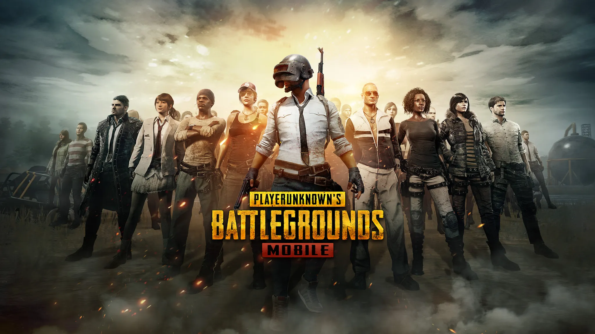

Overview
PlayerUnknown's Battlegrounds (PUBG) is a battle royale shooter developed and published by PUBG Corporation, a subsidiary of Bluehole. In PUBG, up to 100 players parachute onto an island and scavenge for weapons and equipment to eliminate others while avoiding getting killed themselves. The last person or team standing wins the match.
Gameplay
Battle Royale Experience
PUBG offers an intense battle royale experience where players must rely on their wits, strategy, and shooting skills to survive. The ever-shrinking playzone forces players into closer encounters, increasing the intensity as the match progresses.
Variety of Maps
PUBG features multiple maps with distinct environments, including the original Erangel, the desert map Miramar, the tropical Sanhok, and the snow-covered Vikendi. Each map offers unique challenges and opportunities for players.
Weapons and Equipment
The game includes a wide range of weapons, attachments, and equipment, allowing for various combat styles. Players can find assault rifles, sniper rifles, shotguns, grenades, and more to customize their loadout.
Graphics
Realistic Visuals
PUBG is known for its realistic graphics, featuring detailed environments and lifelike character models. The game's visual fidelity contributes to the immersive experience, making every match feel intense and realistic.
Multiplayer
Team Play
PUBG supports solo, duo, and squad play, allowing players to team up with friends or strangers to increase their chances of survival. Communication and coordination are key to success in team modes.
Ranked and Custom Matches
In addition to regular matches, PUBG offers ranked mode for competitive play and custom matches where players can set their own rules. This variety keeps the game engaging and fresh for players of all skill levels.
Community and Updates
Active Player Base
PUBG has a large and active player base, with frequent community events, tournaments, and seasonal updates that add new content and features. The community is diverse, ranging from casual players to professional esports teams.
Regular Updates
PUBG Corporation regularly updates the game, introducing new maps, weapons, and gameplay mechanics. These updates ensure that the game evolves and remains exciting for long-term players.
Reception
Critical Acclaim
PUBG has received widespread acclaim for pioneering the battle royale genre, offering a highly addictive and challenging gameplay experience. Critics and players alike praise its intense matches and strategic depth.
Player Experience
Players appreciate PUBG for its realistic gameplay, variety of maps, and the thrill of being the last one standing. The game's blend of survival, strategy, and action keeps players coming back for more.
Pros and Cons
- Intense Battle Royale Experience: The high stakes and fast-paced gameplay keep players on edge.
- Diverse Maps and Environments: Each map offers unique challenges and strategies.
- Regular Updates and New Content: Frequent updates keep the game fresh and engaging.
- Performance Issues: Some players may experience performance issues, especially on lower-end hardware.
- Learning Curve: The game's mechanics and controls can be difficult for new players to master.
- In-Game Purchases: While not pay-to-win, the presence of in-game purchases can be off-putting for some players.
Conclusion
In conclusion, PlayerUnknown's Battlegrounds offers a thrilling and immersive battle royale experience with its realistic graphics, diverse maps, and strategic gameplay. Whether playing solo or with friends, PUBG delivers a heart-pounding adventure that keeps players engaged and coming back for more.